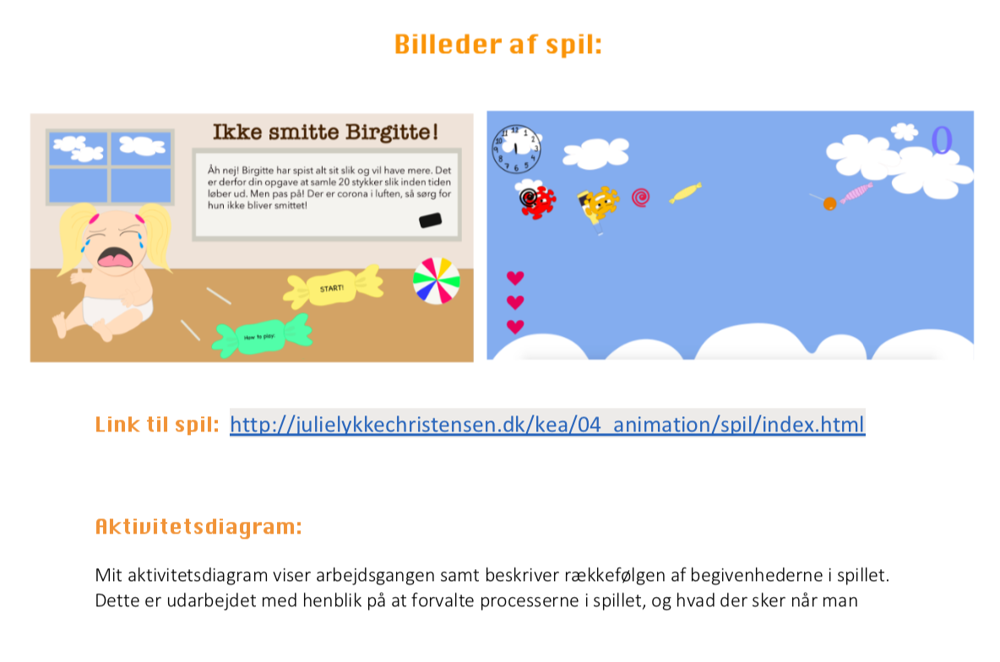
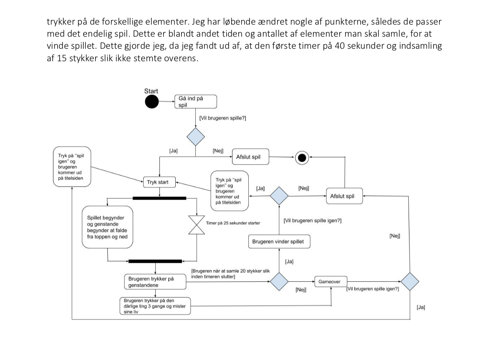
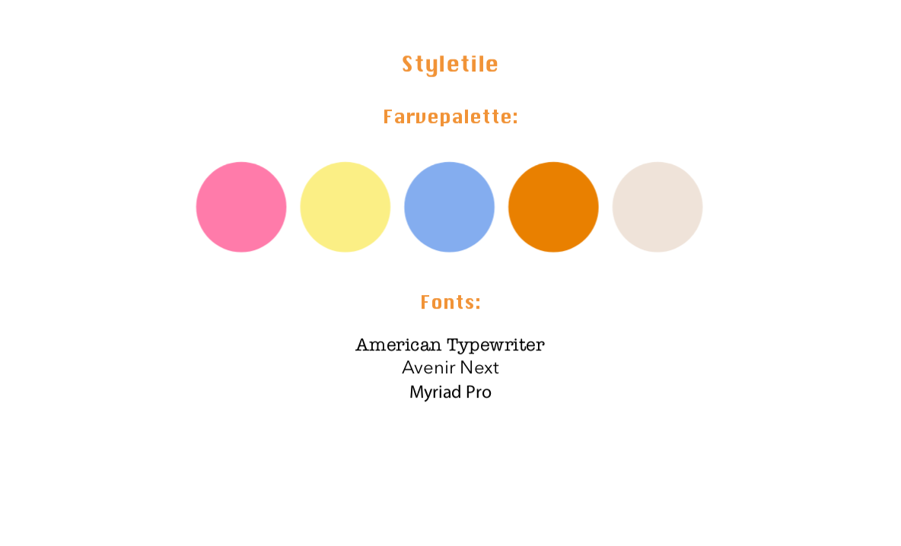
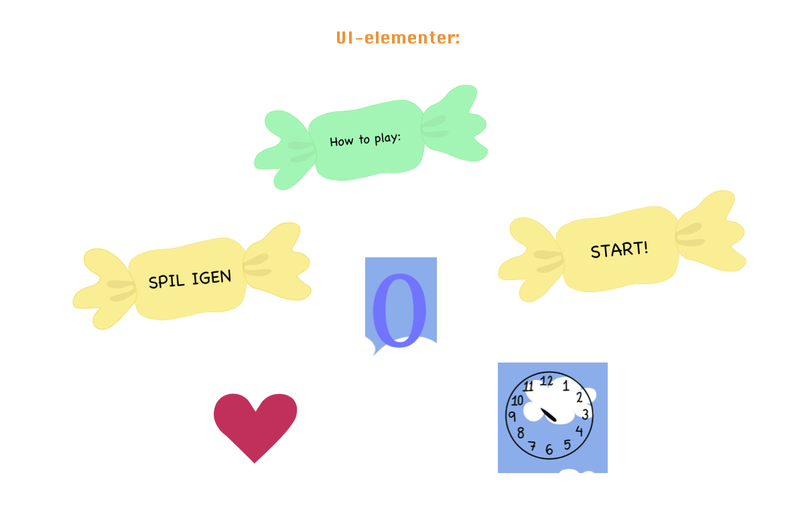
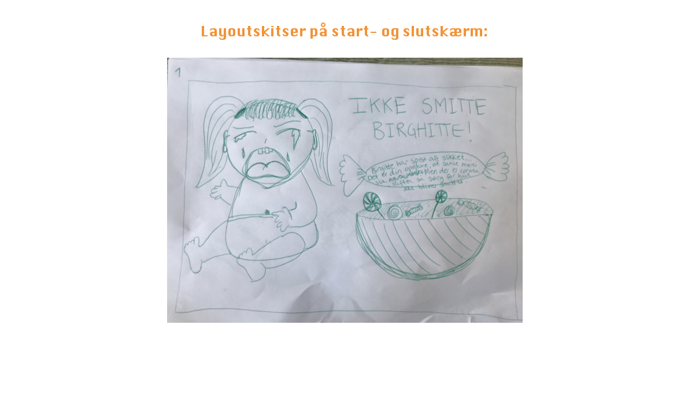
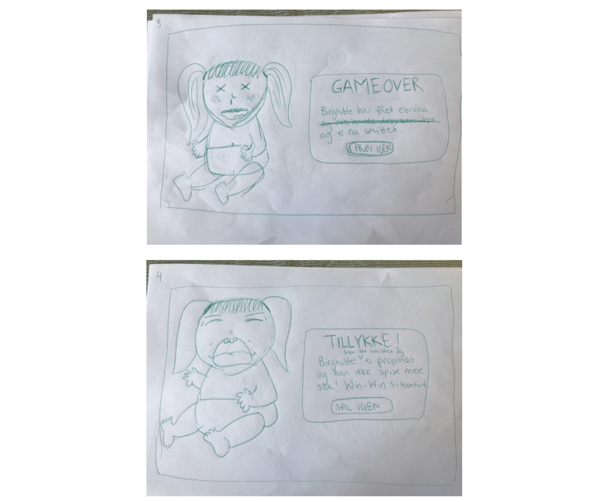
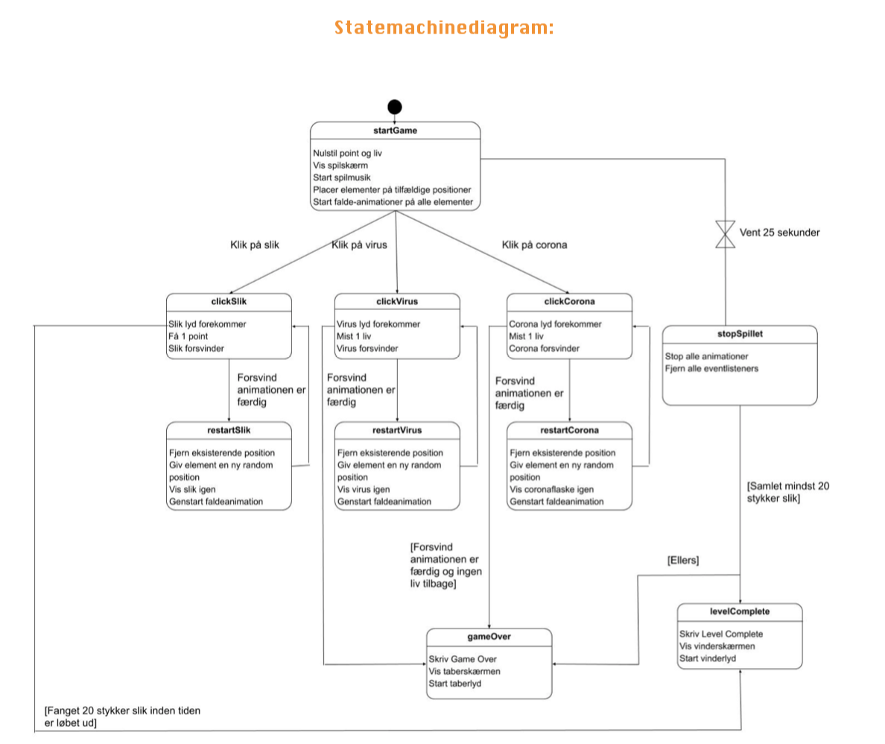
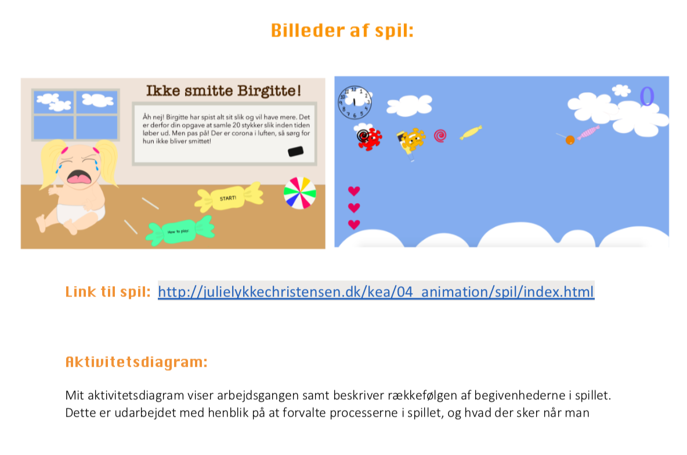
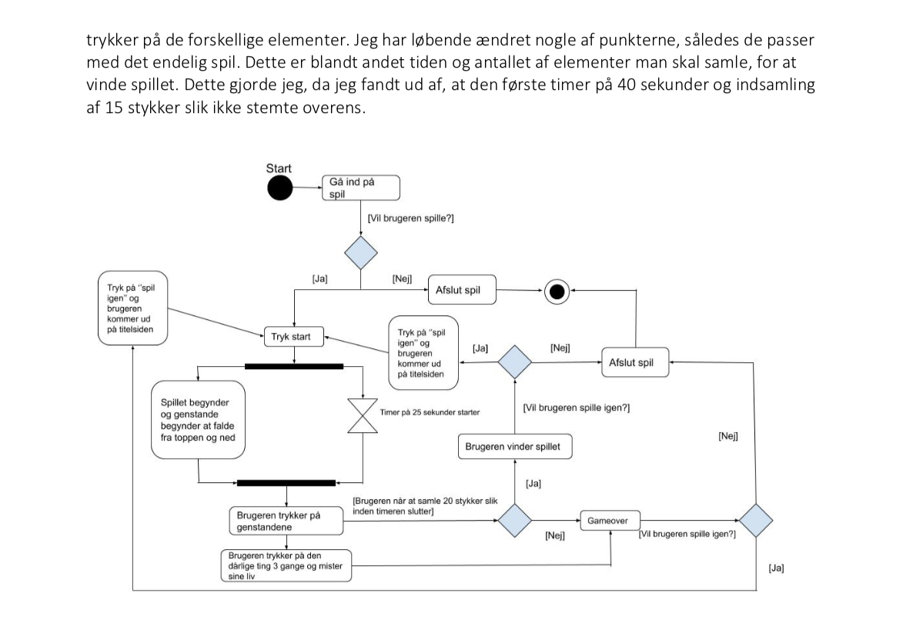
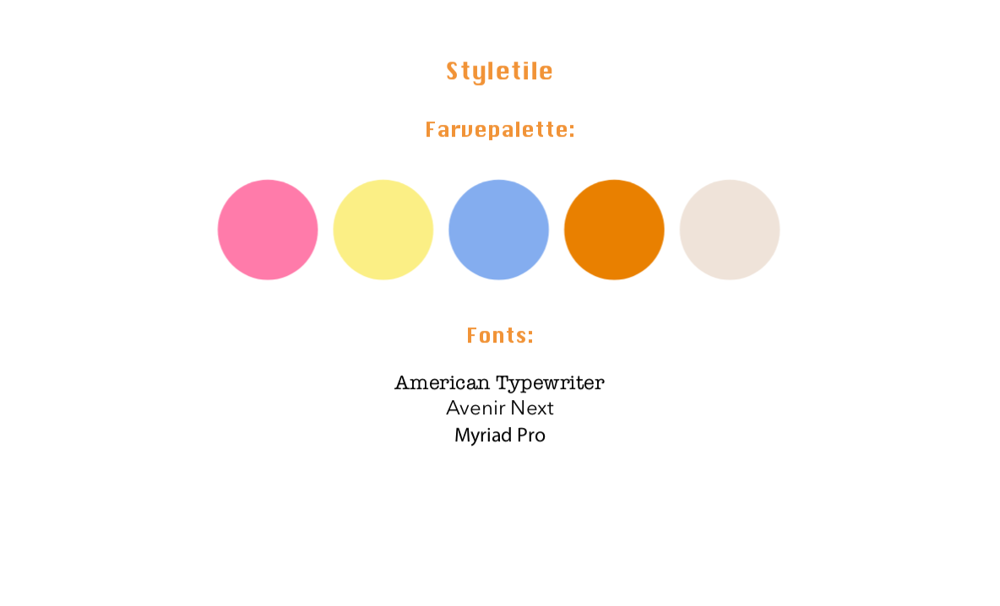
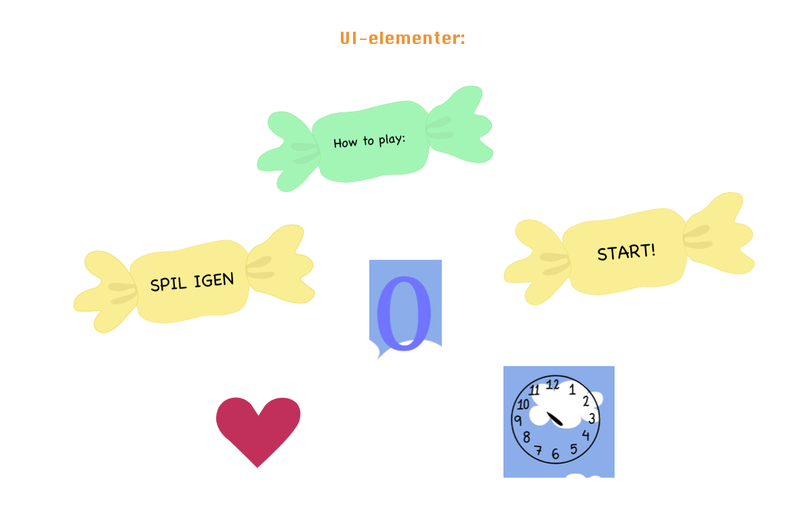
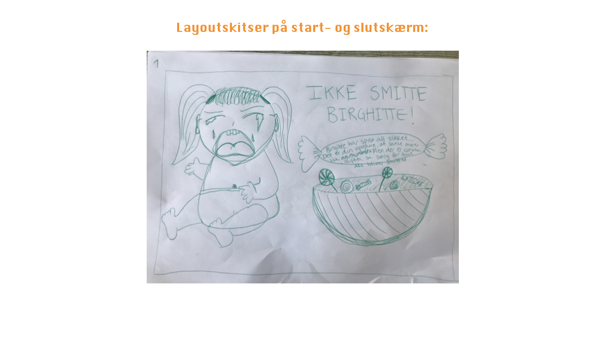
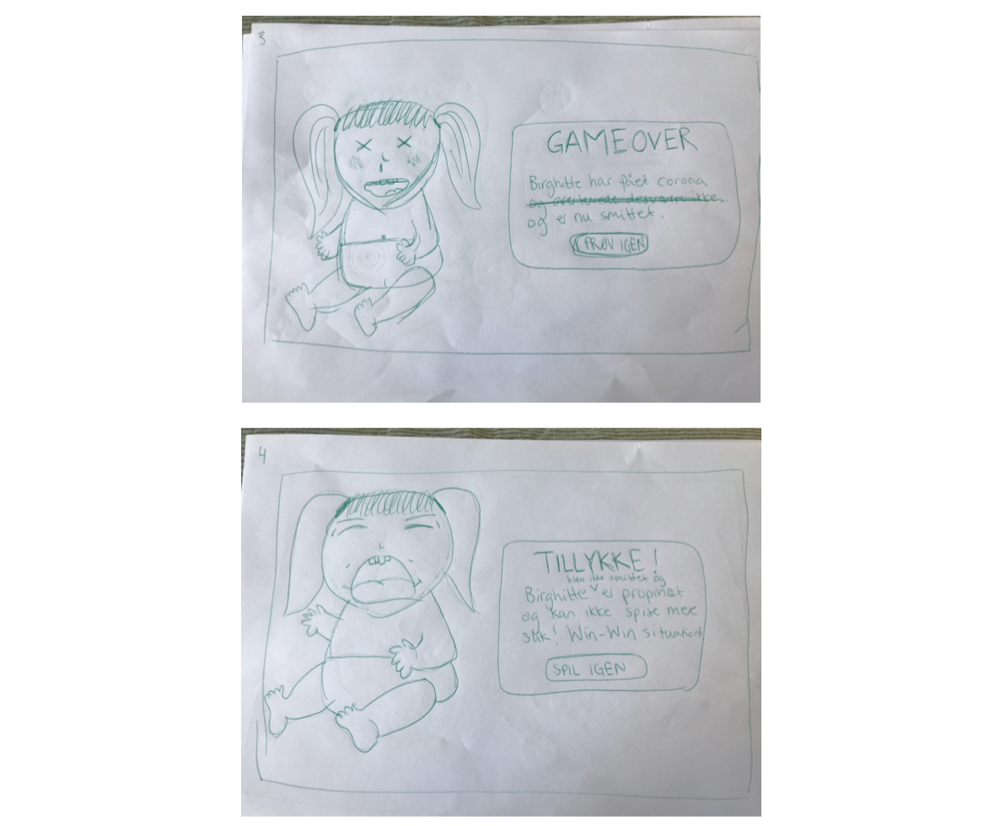
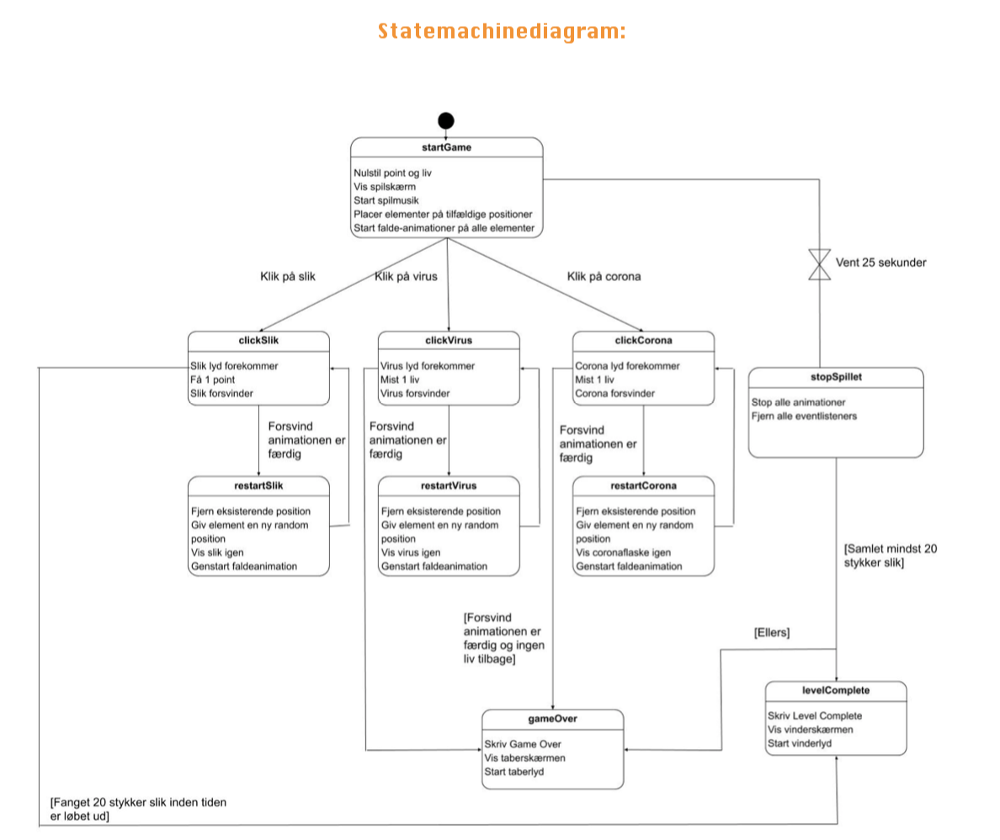
Færdige spil
På dette tema blev vi introduceret til programmeringssproget javascript. Vi fik i den forbindelse til opgave at kode et spil ved hjælp af CSS animationer og javascript, samt at designe og formgive vores egne figurer/UX-elementer og spilleskærm/slutskærm. Derudover blev vi introduceret til aktivitets- og statemachinediagrammer, og hvordan de spiller en vigtig rolle i planlægningen af det interaktive flow. Jeg valgte at designe et spil efter en realistisk stilart, der integrerede virkelig farver og forme i spillet. Desuden havde jeg fokus på, at UX-elementerne skulle give brugerne en følelse af overskuelighed, og at de er taget i hånden, i forhold til brugergrænsefladen. Jeg valgte at designe mine figurer på den førnævnte måde fremfor fx. flat design, da jeg så, at jeg kunne eksperimentere mere med farve og fonte ved at følge den realistiske stilart. Desuden valgte jeg at denne stilart for at få et skabe en retro stemning, der indkapsler de spil, jeg selv spillede da jeg var yngre. Hvis jeg skulle lave noget om nu, ville jeg have lagt mere tid i designprocessen af figurerne og de forskellige skærme, ved at skabe mere dybde i form af placering af elementer.